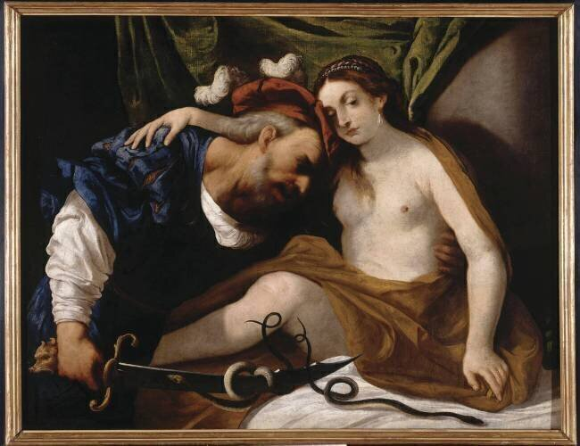

Della Vecchia Painting
Tiresias Transformed into a Woman (17th c.)

Venetian Baroque oil painting by Pietro della Vecchia (17th century), dramatically capturing the moment Tiresias strikes the serpents with his staff and experiences his physical metamorphosis.
Attached Predicates & Semantic Relations
| rdf:type Entity Type | schema:VisualArtwork |
RDF Graph Fragment (Turtle)
@prefix : .
@prefix crm: .
@prefix schema: